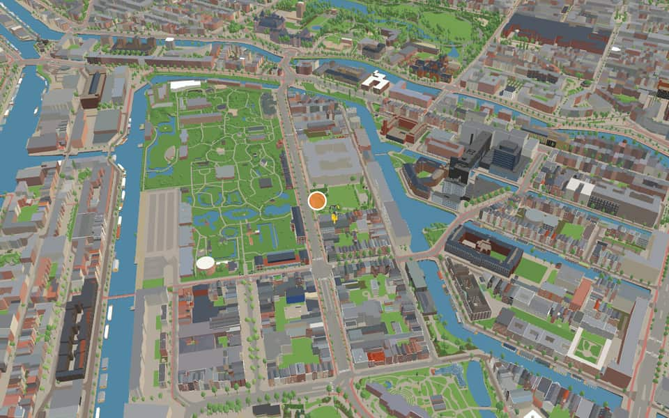
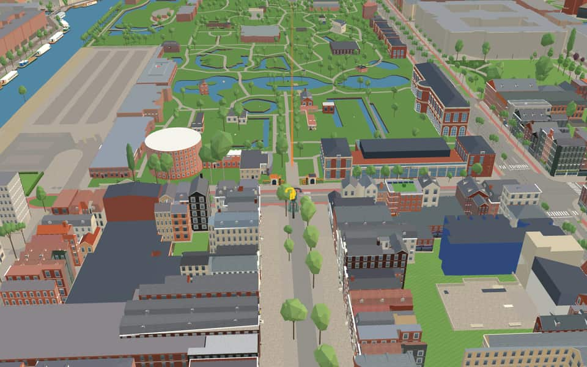
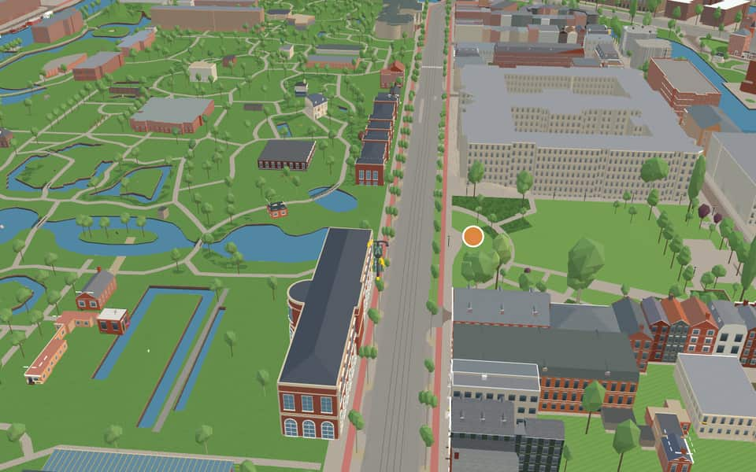
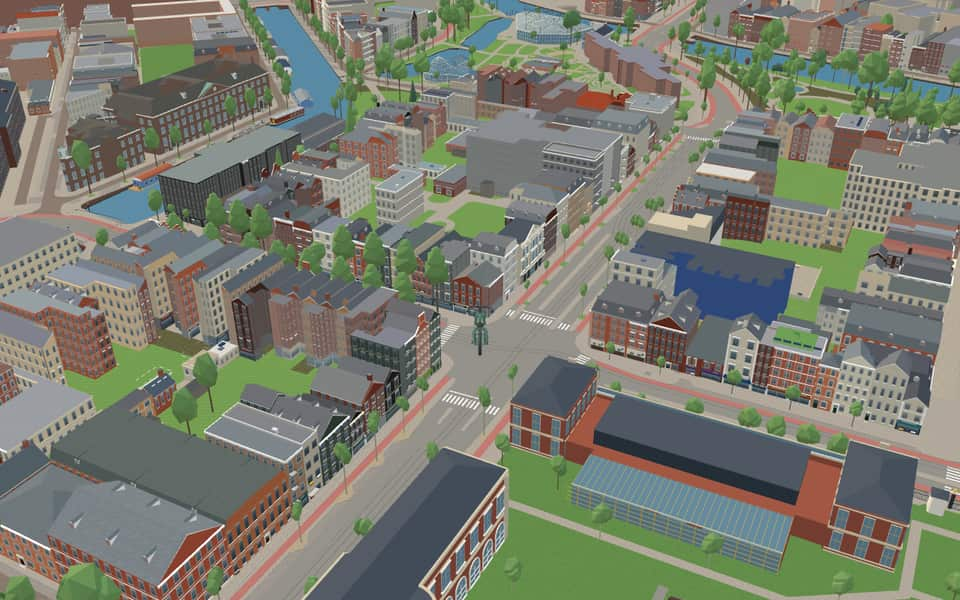

Neighbourhood · Amsterdam
Plantage
Plantage is a neighbourhood of Amsterdam, Netherlands located in its Centrum borough. It is bordered by the Entrepotdok to the north, Plantage Muidergracht to the east and south and Nieuwe Herengracht to the west. In the centre of the neighbourhood lies the Natura Artis Magistra zoo. en.wikipedia.org
The name. The gardens laid out here after the 1663 expansion were called the Plantagie or Plantaadje, and most streets in the neighbourhood still begin with 'Plantage'. nl.wikipedia.org


In the game
Frames from a ride through Plantage.




6 more photos of Plantage

.jpg){kind=link}

.jpg){kind=link}


_-_2024-11-25_-_1.jpg){kind=link}


_-_2024-11-25_-_2.jpg){kind=link}
Built here
Buildings modelled one by one for the ride.
ARTIS entrance gate and kiosks
ARTIS Library — Fauna Building

ARTIS Micropia / Ledenlokalen
Photo: Micropia Museum Amsterdam 4.jpg (Eric de Redelijkheid, CC BY-SA 2.0)
Hollandsche Schouwburg

Auschwitzmonument (Wertheimpark)
Photo: Auschwitz monument amsterdam.JPG (Arthena, CC BY-SA 4.0)

Dutch Resistance Museum — Plancius


National Holocaust Museum
Photo: 2024 NHM, Plantage Middenlaan 27, Asd (1).jpg (Ceescamel, CC0)
- No picture yet
Artis Aquarium
- No picture yet
Hortus Botanicus — greenhouses and orangery


.jpg){kind=link}
Did you know
Trivia the ride can show you here.
- Artis, opened here in 1838, is the oldest zoo in the Netherlands. Wikipedia
- When building stalled, the area became the ‘Plantagie’: gardens and pleasure grounds where Amsterdammers relaxed in the green. Wikipedia (translated from Dutch)
- The Hortus Botanicus, opened in 1682, is one of the oldest botanical gardens in the world. Wikipedia
- One coffee plant in the Hortus Botanicus was the parent of the whole coffee culture of Central and South America. Wikipedia
- Of the zoo's three gates, Natura, Artis and Magistra, usually only the middle one was open, hence the name Artis. Wikipedia
- The Nazi occupiers used the Hollandsche Schouwburg theatre as a deportation centre during the Holocaust. Wikipedia
- The Dutch Resistance Museum's building was built in 1876 by the Jewish singing society Oefening Baart Kunst. Wikipedia
- The Wertheimpark is the only park within the Centrum borough. Wikipedia (translated from Dutch)
- ArtisVisitors often called it Artis because only the middle gate, reading 'Artis', was usually open. en.wikipedia.org
- ArtisArtis holds the title of the oldest zoo in the Netherlands and the fifth oldest still operating worldwide. en.wikipedia.org
- Artis BibliotheekThe library joined the University of Amsterdam's Special Collections in 2005. en.wikipedia.org
- Artis BibliotheekSince 2019, it has been part of the Allard Pierson Museum. en.wikipedia.org
- Auschwitz MemorialWriter Jan Wolkers designed the monument despite having little experience with glass. nl.wikipedia.org
- Auschwitz MemorialThe memorial moved from Oosterbegraafplaats to Wertheimpark in 1993. nl.wikipedia.org
36 more facts
- Auschwitz MemorialThe original artwork was largely made by hand with few safety requirements during its creation. nl.wikipedia.org
- Dutch Resistance MuseumPermanent exhibits recreate Amsterdam streets using big photos, old posters, objects, films and sounds. en.wikipedia.org
- Groote MuseumThe collection moved to Naturalis in Leiden after the museum closed in 1947. nl.wikipedia.org
- Groote MuseumA major restoration between 2012 and 2022 prepared the vacant building for its return. nl.wikipedia.org
- Groote MuseumQueen Máxima officially reopened the restored museum on May 10, 2022. nl.wikipedia.org
- Groote MuseumVisitors can enter the Groote Museum without needing a zoo ticket. nl.wikipedia.org
- Hollandsche SchouwburgNazi occupiers reclassified the theater as a Jewish venue in 1941 before using it as a deportation center. en.wikipedia.org
- Hollandsche SchouwburgTeenager Lydia Riezouw secretly photographed prisoners, including her friend Greetje Velleman, from her window in 1942. en.wikipedia.org
- KunstenaarsverzetGerrit van der Veen, the resistance fighter honored here, destroyed population registers in March 1943. nl.wikipedia.org
- KunstenaarsverzetArtist Carel Kneulman originally envisioned an eight-meter-high statue for this monument. nl.wikipedia.org
- MicropiaA Kiss-O-Meter exhibit measures the number of microbes shared during a kiss. en.wikipedia.org
- National Holocaust MuseumDuring the Nazi occupation, 102,000 Dutch Jews were killed, representing three-quarters of the country's Jewish population. en.wikipedia.org
- National Holocaust MuseumScholars cite the high death rate partly to the cooperation of Dutch authorities and the local Jewish Council in Amsterdam. en.wikipedia.org
- National Holocaust MuseumPostwar society initially seemed uninterested in Jewish suffering, yet the museum now invites visitors to immerse themselves in that history. en.wikipedia.org
- National Holocaust MuseumStories focus on individual men, women, and children rather than abstract statistics or dates. en.wikipedia.org
- Hollandse TuinFour marble sculptures representing the seasons were permanently installed at the garden's corners in the 1930s. nl.wikipedia.org
- Hollandse TuinA female figure and lion at the monument base reference the allegory of the Hollandse virgin and Leo Belgicus. nl.wikipedia.org
- Hollandse TuinThe garden features two symmetrical borders flanking a central axis with rectangular plots ending in concave curves. nl.wikipedia.org
- Hollandse TuinFour marble statues representing the seasons stand in the corners on natural stone bases. nl.wikipedia.org
- Hortus BotanicusThe Palm House and Hugo de Vries Laboratory were built in 1912 and 1915 using Amsterdam School expressionist architecture. en.wikipedia.org
- Hortus BotanicusThe garden houses a Persian ironwood tree among its famous collection of endangered plants. en.wikipedia.org
- WertheimparkDespite being a central Amsterdam park, Wertheimpark has no official street addresses. nl.wikipedia.org
- EntrepotdokThe Entrepotdok (Warehouse Dock) was formerly known as Nieuwe Rapenburgergracht. en.wikipedia.org
- EntrepotdokConstruction of these warehouses spanned from 1708 until 1829. en.wikipedia.org
- EntrepotdokSquatters occupied the complex during the 1990s before conversion to apartments. en.wikipedia.org
- Nieuwe HerengrachtOriginal stone arch bridges were swapped for movable ones to accommodate the growing shipping industry. en.wikipedia.org
- Nieuwe HerengrachtA cycle tunnel on the south bank dives beneath Weesperstraat to connect the Amstel with the Plantage area. en.wikipedia.org
- Nieuwe KeizersgrachtThe section east of the Amstel was dug during a final extension. en.wikipedia.org
- Plantage MuidergrachtThe section along Sarphatistraat was once named Plantage Lijnbaansgracht before 1915. en.wikipedia.org
- Plantage MuidergrachtPoet Adriaan Morriën lived at number three and titled a memoir after the street. en.wikipedia.org
- Plantage MuidergrachtJournalist Milo Anstadt described his family home at number eighty-nine in De verdachte oorboog. en.wikipedia.org
- Plantage MuidergrachtBuildings along this canal originally hosted physics, chemistry, and biology courses before shifting to other faculties. en.wikipedia.org
- Plantage DoklaanA section of the original route vanished after being repurposed for housing and an extension of Artis. nl.wikipedia.org
- Plantage DoklaanDutch Railways operated a goods yard here from 1904 until the 1980s. nl.wikipedia.org
- Plantage DoklaanNew trams were delivered by rail to this spot during three separate periods between 1972 and 1981. nl.wikipedia.org
- Plantage DoklaanTram lines 6, 7, 14 and 20 once ran here until the last service ended in 2006. nl.wikipedia.org
Names on the map
Where the canal, bridge and street names come from.
Canals and water
- EntrepotdokNamed after its function. The dock was built in 1827; imported goods had to be stored here until the import duties were paid (a bonded warehouse, entrepot). The warehouses have lost their function as an entrepot, and in part of them the upper floors have now been converted into homes (Binnenkadijk).
- Nieuwe HerengrachtAfter the Heren Regeerders (the lords who governed the city; in the old days the city was not administered but ruled). The canal already existed as a ditch when in 1612 it was widened into today's canal, the first of the three main canals. The stretch beyond the Leidsegracht belongs to the expansion of 1658, as does the Nieuwe Herengracht.
- Nieuwe KeizersgrachtAfter Emperor Maximilian, Archduke of Austria, who in 1489 granted Amsterdam the privilege of bearing the imperial crown on its coat of arms.
- Plantage MuidergrachtThe town of Muiden. The former Muidergracht began at the Leprozengracht. After it was filled in, one part became the Jonas Daniël Meijerplein, and the second part was later renamed Hortusplantsoen. The part of the Plantage Muidergracht parallel to the Sarphatistraat was called Plantage Lijnbaansgracht before 1915.
Bridges
- NijlpaardenbrugRefers to the hippopotamuses (nijlpaarden) in Artis.Bridge 1907: a movable steel bridge.
Streets
- Anne FrankstraatAnne Frank, born to Jewish parents in 1929, was in hiding from 1942 to 1944 with her parents and other members of her family in the building at Prinsengracht 263, where she kept a diary. In 1944 the German occupiers discovered the family and deported them. Anne Frank died of illness and exhaustion in 1945 in the Bergen-Belsen concentration camp.
- Henri PolaklaanTrade union leader and politician (1868-1943), co-founder of the SDAP in 1894 and Amsterdam's first social-democratic city councillor. In 1894 he founded the General Dutch Diamond Workers' Union, which later took the initiative in founding the NVV (trade union federation). With this naming in 1945 the name Plantage Franselaan was dropped. Early in the eighteenth century it was called the Achterlaan.
- NijlpaardenbrugRefers to the hippopotamuses (nijlpaarden) in Artis.
- Piet MeerburgbrugThis bridge is named after Piet Meerburg, born in De Bilt in 1919 and died in Amsterdam in 2010. During the Second World War he was involved in rescuing Jewish children, for which he received the Yad Vashem distinction; one of those children was the later burgomaster Ed van Thijn. With Lau Mazirel and Walter Süskind, among others, he rescued many adults and children during the German occupation from the Hollandsche Schouwburg and the crèche opposite it. He was also one of the founders of the nearby Kriterion cinema, which is run by students of the University of Amsterdam.
- Plantage BadlaanAfter the bathhouse (badhuis) that stood here from 1797 to 1820.
- Plantage DoklaanIn 1682 the city government decided to lay out a 'plantagie' on this land, which came within the city in 1658: a pleasure ground built up only with summer houses, gardens and a few inns. A grid of straight lines was laid out over the whole area. The avenue running the length of the new Plantage was named Middenweg or Middenlaan, and three cross avenues were added. The summer houses were gradually replaced by houses, so that today only the Wertheimpark recalls the area's former purpose.
- Plantage KerklaanIn 1682 the city government decided to lay out a 'plantagie' on this land, which came within the city in 1658: a pleasure ground built up only with summer houses, gardens and a few inns. A grid of straight lines was laid out over the whole area. The avenue running the length of the new Plantage was named Middenweg or Middenlaan, and three cross avenues were added. The summer houses were gradually replaced by houses, so that today only the Wertheimpark recalls the area's former purpose.
- Plantage LepellaanIn 1682 the city government decided to lay out a 'plantagie' on this land, which came within the city in 1658: a pleasure ground built up only with summer houses, gardens and a few inns. A grid of straight lines was laid out over the whole area. The avenue running the length of the new Plantage was named Middenweg or Middenlaan, and three cross avenues were added. The summer houses were gradually replaced by houses, so that today only the Wertheimpark recalls the area's former purpose.
- Plantage MiddenlaanIn 1682 the city government decided to lay out a 'plantagie' on this land, which came within the city in 1658: a pleasure ground built up only with summer houses, gardens and a few inns. A grid of straight lines was laid out over the whole area. The avenue running the length of the new Plantage was named Middenweg or Middenlaan, and three cross avenues were added. The summer houses were gradually replaced by houses, so that today only the Wertheimpark recalls the area's former purpose.
- Plantage MuidergrachtThe town of Muiden. The former Muidergracht began at the Leprozengracht. After it was filled in, one part became the Jonas Daniël Meijerplein, and the second part was later renamed Hortusplantsoen. The part of the Plantage Muidergracht parallel to the Sarphatistraat was called Plantage Lijnbaansgracht before 1915.
- Plantage ParklaanThe avenue ran along the former 'Park', a broad strip of land along the Nieuwe Herengracht, of which the Wertheimpark is the remnant. Where the sports ground is now, a concert hall with a winter garden stood from 1849, and the Parkschouwburg theatre from 1883 to 1912.
- Plantage WestermanlaanThe Nieuwe Prinsengracht originally ran as far as the Entrepotdok. In 1864 part of it was added to Artis (recognisable by the ponds). The rest was filled in and named Plantage Prinsenlaan by council decision of 19 November 1879. For the zoo's 125th anniversary the name was changed in 1963 to the present one, after Gerardus Frederik Westerman (1807-1890), the founder of 'Artis'.
1 more street with a story
- PlantagekadeIn 1682 the city government decided to lay out a 'plantagie' on this land, which came within the city in 1658: a pleasure ground built up only with summer houses, gardens and a few inns. A grid of straight lines was laid out over the whole area. The avenue running the length of the new Plantage was named Middenweg or Middenlaan, and three cross avenues were added. The summer houses were gradually replaced by houses, so that today only the Wertheimpark recalls the area's former purpose.
1 other street without a recorded story
Montefiorepark